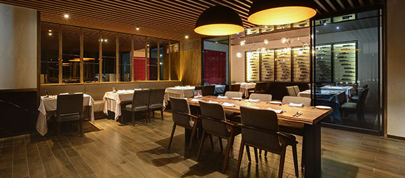
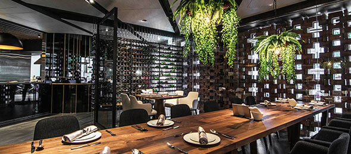

看見花綻FUN
花綻最美的瞬間，最燦爛的滋味，從花園到餐桌以花入菜，花綠繽紛的配角，細緻感受花、葉賦予的味覺驚豔與美感！
【花綻繆思•金馬盛宴】
花綻最美的瞬間，最燦爛的滋味， 從花園到餐桌以花入菜，花綠繽紛的配角， 金牌主廚設計一場視覺、嗅覺及味覺饗宴， 細緻感受花、葉賦予的味覺驚豔與美感！
花綻繆思 • 金馬盛宴
經典煥新•一店一風格
以經典向地方致敬，體現優雅在地文化
見證經典喚起美好年代，與您共創玫麗時光

高雄中正店(工業藝廊)
高雄鋼鐵工業重鎮，以鐵匠工藝打造藝文空間。

高雄博愛店(遊艇)
向高雄港都致敬，以遊艇為設計軸心，打造海上廚房。

桃園同德店(招待所)
頂級商務地段，由收藏陳設與挑高空間，體現大器私人招待所。

台北羅斯福店(私廚)
私人廚房概念打造Open Kitchen，營造家宴款待貴賓。
以經典向國際港都致敬
高雄為鋼鐵工業重鎮，其造船工業聞名國際
以鐵匠工藝打造文化藝廊，展現工業藝文空間